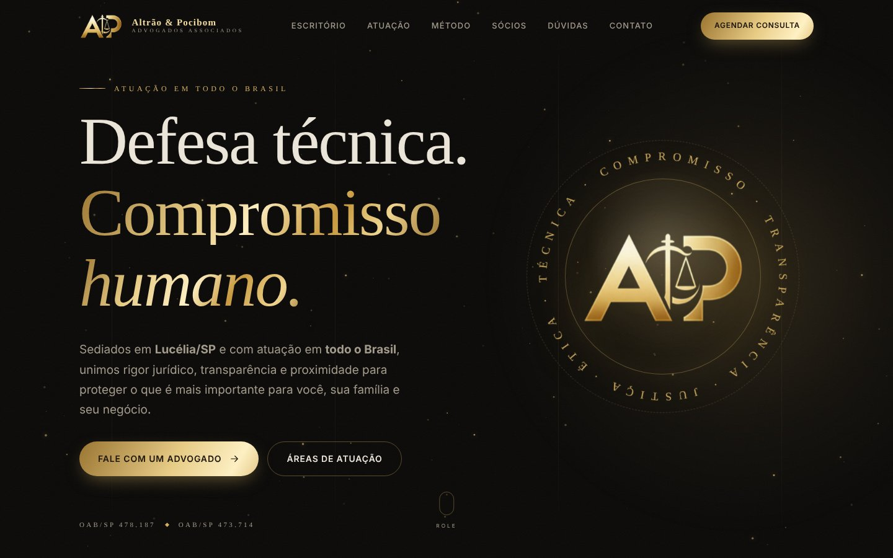

Atendimento
Responde clientes no WhatsApp a qualquer hora
Sua empresaassistente online
Inteligência artificial sob medida para empresas
Criamos sistemas, automações, sites e painéis com IA, desenhados para a rotina da sua empresa. Comece dizendo o que toma o seu tempo.
Conecta com o que a sua empresa já usa
Toda empresa tem tarefas que dão voltas: responder a mesma pergunta, copiar de uma planilha para outra, ler contratos inteiros para achar um prazo. Nós desenhamos a linha reta.
Demonstrações
Exemplos do que dá para construir. Cada solução é ajustada aos dados, às ferramentas e ao jeito de trabalhar de quem vai usar.
Calculadora
Escolha uma tarefa repetitiva e ajuste os números. Veja quanto tempo ela ocupa da sua equipe todo mês.
Por mês, em 22 dias úteis
44horas
São 5,5 dias inteiros de trabalho por mês só para responder clientes.
528 horas por ano
Mapa do atalho
Liste os passos que a sua equipe faz hoje. O mapa mostra o caminho longo e onde a IA pode cortar caminho.
Comece por um exemplo ou escreva o seu
Como funciona
Um processo curto e transparente. Antes de começar, você já sabe o que vai receber, quanto custa e quando fica pronto.
Você conta o que toma tempo na rotina. Sem compromisso e sem termos técnicos.
Apresentamos a solução em linguagem simples, com prazo e valor combinados.
Desenvolvemos e mostramos o andamento. Você testa e pede ajustes.
Colocamos para funcionar, ensinamos a usar e acompanhamos depois.
Setores
Projeto entregue · jurídico

Dúvidas
Não achou a sua? Escreva no WhatsApp e respondemos.
Não. Você explica o problema do seu jeito e nós cuidamos da parte técnica. No fim, ensinamos a usar de forma simples.
Depende do tamanho do problema. Depois da primeira conversa você recebe uma proposta com valor e prazo, antes de qualquer compromisso.
O prazo é combinado na proposta. Projetos maiores são divididos em etapas, para você já usar as partes prontas.
Sim. O atendimento é online, por videochamada e WhatsApp, e vale para qualquer cidade do país.
Seus dados são usados só no seu projeto, com acesso restrito e respeitando a LGPD. Na proposta, explicamos quais ferramentas vão acessar os dados. Sempre que possível, a solução fica em contas da própria empresa, e você mantém o controle.
Acompanhamos o uso por um período combinado na proposta e fazemos os ajustes necessários. Manutenção e melhorias contínuas podem ser combinadas à parte.
Uma conversa rápida no WhatsApp para entender o seu caso. Sem compromisso.
EnterClique na tecla ou pressione Enter